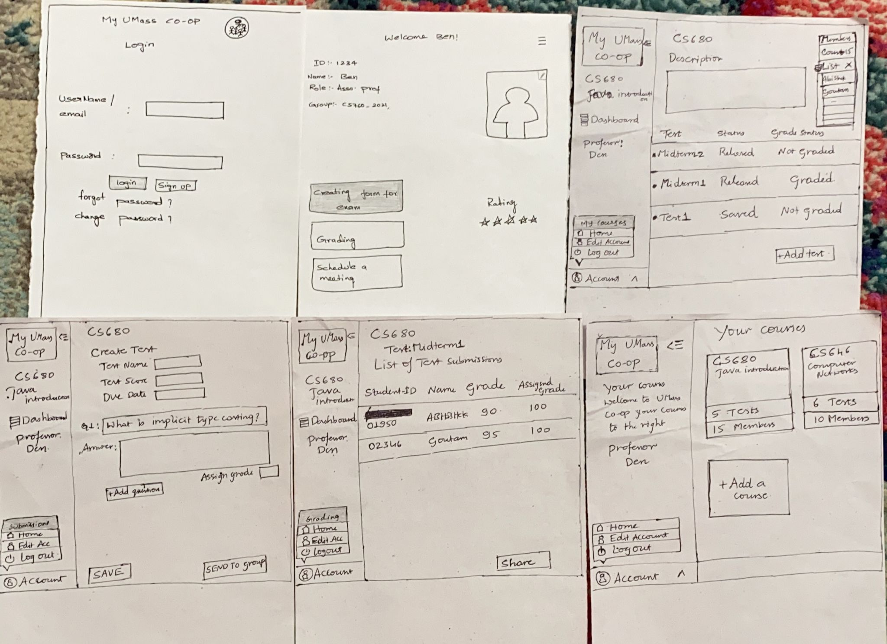

Paper prototyping and User Analysis
We have created the following paper prototype based on the task analysis we created previously.
1. Basic Paper prototype
It is the process where UI design team create paper representations of digital products to help them realize concepts and test designs.
They are used to test ideas, focus on important points, helps in improving design ideas.

Fig: Initial prototype proposed.
- User analysis of the prototype
User-1(Kanthiraj)
pros:
- The interface felt lively and easy to work.
- options were eleaborated.
- Structured User interface.
cons:
- Found the menu very limited.
- Not categorized.
User-2(Pablo Bendikson)
Notes:
- UI feels smooth.
- Clear and task oriented.
cons:
- Mentioned to categorise groups into subgroups to make hierarchical.
- Did not understand how groups and tests are linked.
Flaws on this prototype
2. Finalized Model
Based on the above flaws and user reviews, We have come up with this finalized model.
This is the final model we came up with
This prototype is based on the task analysis we came up with.
3. Running the tests
4. Writeups
Observations
Main Site
To go back to main website Click here.